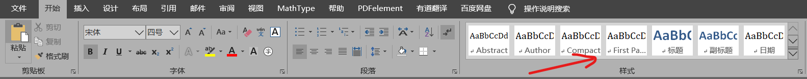
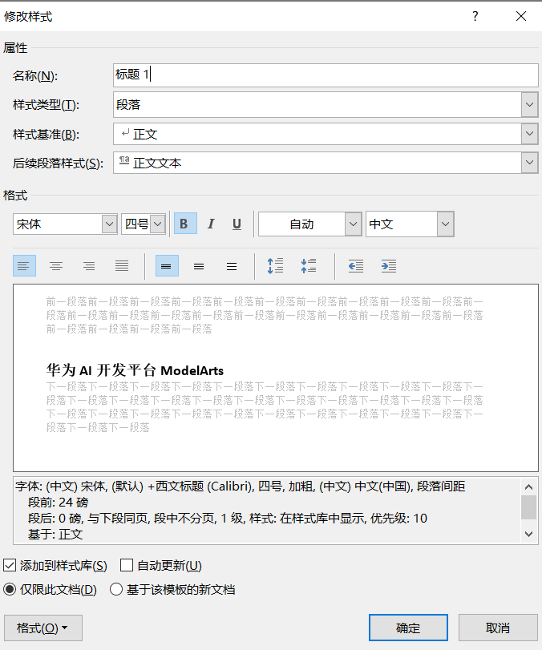

04 EXCEL、Word、PPT、Zettlr¶
从Zettlr/pandoc导出为word时的样式选择¶
实际上,Zettlr使用pandoc转换文件格式为docx，所以下面都是对pandoc的配置
步骤1 创建reference.docx样式文件¶
可以生成如下的md文件

在zettlr中转为word，或者直接用盘doc命令：
1 | pandoc m.md -o reference.docx |
步骤2 更改docx中的样式¶
在docx中更改样式，注意不是直接修改，需要在菜单栏->开始->样式中右键修改

右键修改：

步骤三 pandoc使用模板导出¶
使用命令
1 | >pandoc "a.md" --reference-doc reference.docx -f markdown -o "a.docx" |
或者将reference.docx直接放在特定文件夹中(pandoc目录可能需要新建)：
1 | %userprofile%/AppData/Roaming/pandoc |
如果是放入了pandoc目录，则最后直接使用命令即可，默认使用这一模板
REFERENCE¶
【配置了doc样式】markdown + pandoc 生成 docx / pdf
Excel电子表格使用记录¶
统计小于某一值的数据个数¶
- 这是在四级成绩统计时计算出未通过人数的函数：
1 | COUNTIF(A1:A15,"<425") |